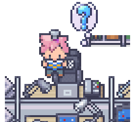
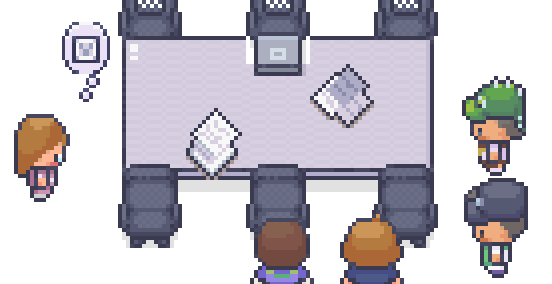
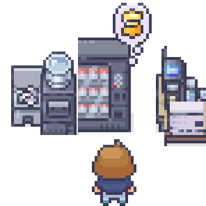
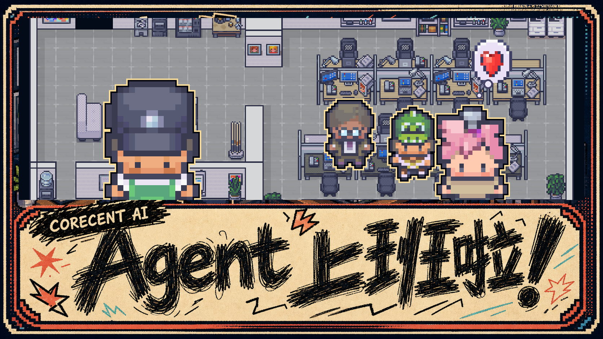
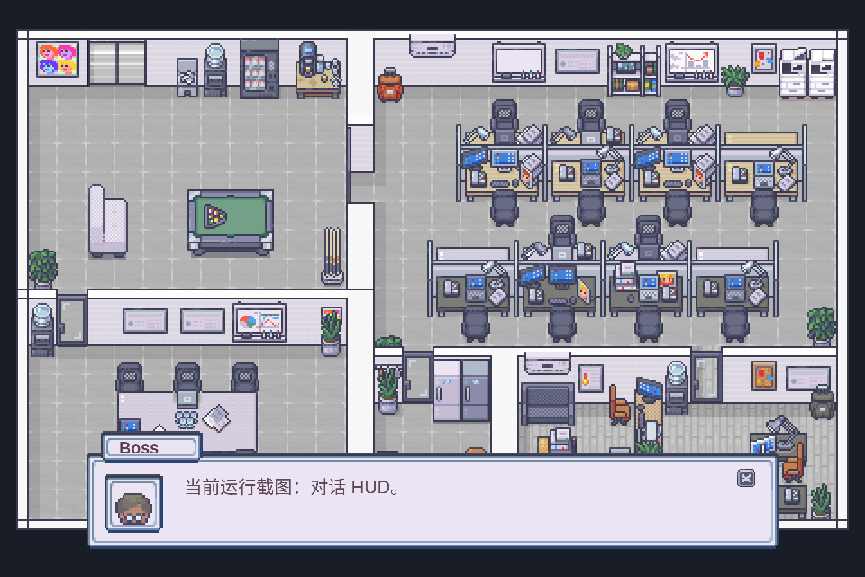
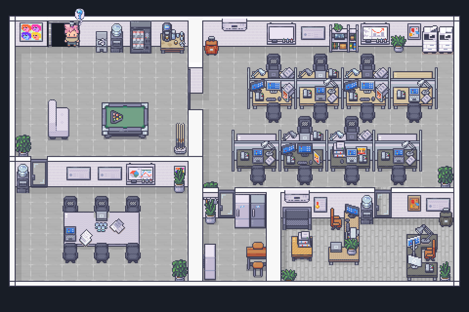

推荐入口
startScript 和 startInteraction 是正式产品交互优先入口。确定性流程用台本，使用者实时意图用交互。



Technical reference
这里集中维护 debug 模式、agentOfficeBridge、本地 bridge、runtime command、payload、step、NPC command、地图对象和头顶气泡参考。
01 / Debug runtime
officeRuntime 命令入口
查看 startScript、startInteraction、state 和运行管理命令该怎么用。
02 / Reference
payload、step 和 command
每个字段、可选值、使用场景和约束都集中在后面的表格里。
03 / Bridge
agentOfficeBridge 和 SSE
查看生产页面如何发现本地 bridge、接收事件并映射到 NPC。

Office command plane
这是进入项目后应该先看的章节：它说明开发调试环境里可以调用哪些 officeRuntime 命令、什么时候应该用推荐入口、什么时候只看状态、什么时候做管理控制，以及哪些接口只适合底层调试。
推荐入口
startScript 和 startInteraction 是正式产品交互优先入口。确定性流程用台本，使用者实时意图用交互。
状态查看
state() 只读当前运行快照，用来确认 NPC、台本、对话、门和事件日志。
管理控制
取消、恢复默认行为、启停交互和修改策略属于运行管理，适合调度或控制面板。
底层/调试
直接生成 NPC、直接发 NPC 命令、直接打开对话框适合测试能力，不建议作为正式产品入口。
Recommended calls
第一列是使用者/API 应该调用的方法；运行事件只是底层状态流和排查线索。
开发环境会暴露 window.officeRuntime，用于浏览器 console 调试；生产环境不会暴露这个对象。正式 UI、未来 REST bridge 或编辑器工具应该调用同一套虚拟办公室命令能力，而不是依赖浏览器 console。
如何读取状态
状态读取不会移动 NPC，也不会改变剧情。它适合确认命令是否发出、NPC 是否 ready、对话是否打开、门是否上锁。
const state = officeRuntime.state();
console.table(state.npcRuntime.byId);
console.table(state.scriptRuntime.byId);
console.table(state.interactionRuntime.byId);
console.table(state.doorRuntime.byId);Common task
当你想通过实时交互让一个已经存在的 NPC 说话时，查这条路径：InteractionStartPayload.steps -> 直接使用高层 say step。兼容别名 officeGame.startInteraction(payload) 仍可用；说明书推荐写 officeRuntime.startInteraction(payload)。
1. payload
从 InteractionStartPayload 开始，指定 actors 绑定要说话的 NPC。
2. step
在 steps 里放一个 say step，把 actor 指向绑定的 actor。
3. command
可加 headBubbleContent 指定说话时的头顶气泡，例如 angry。
officeRuntime.startInteraction({
interactionId: "boss-says-status",
source: "operator",
priority: "operator",
mode: "interrupt",
actors: [
{ name: "speaker", npcId: "boss" }
],
steps: [
{
type: "say",
actor: "speaker",
headBubbleContent: "angry",
lines: ["我已经收到任务，马上处理。"],
waitUntil: "closed"
}
]
});System map
External caller / operator UI / future REST bridge
-> officeRuntime command methods
-> virtual office runtime services
-> Phaser movement, dialogue, doors, leases, pathfinding
-> runtime state/error events
-> officeRuntime.state()
Browser-side local bridge
生产页面不会暴露 window.officeRuntime。浏览器启动时会静默探测同源本地 bridge，拿到配置后通过 SSE 接收 agent event，再交给 runtime adapter 映射成 NPC 行为。
1. config
GET /api/office/config 返回 streamUrl/token；404 或请求失败时静默禁用。
2. SSE
GET /api/office/events?token=... 使用 EventSource，监听 agent-office-event 和默认 message。
3. post
POST /api/office/events 需要 Bearer token，可发送单个 event 或 { events: [...] }。
4. health
GET /api/office/health 用于 launcher 确认 detached bridge 已经准备好。
Replay 和 session 规则
bridge 缓冲最近 200 条事件；浏览器用 latestEventId 和 sessionStorage 避免刷新后重播旧台词。调试时可在 URL 加 ?officeReplay=true。
GET /api/office/config
GET /api/office/events?token=<token>
POST /api/office/events
Authorization: Bearer <token>
event: agent-office-event
id: 1
data: {"type":"agent.status","agentId":"main","status":"working"}Office commands and status updates
Payload 列可点击跳转到对应 payload 表格。使用者、工具或未来 API 应该通过 officeRuntime 命令方法发送请求；说明书不会暴露内部实现细节。
Payload dictionary
Script steps
script:start.steps 和 interaction:start.steps 使用同一套 step。每个 step 都支持公共字段 id、label、optional、continueOnError、timeoutMs、metadata。
NPC commands
NPC command 是底层动作/反馈/说话积木。常见单动作已有同名高层 step；只有一次需要发送多条 command、或者需要使用低层队列语义时，才需要直接写 npcCommands。
Map content
这些表格按 Tiled 图层拆分，并提供怎么使用。对象名是脚本 API；文档不列坐标。
Head bubbles
headBubbleContent、content 和 bubbleId 都链接到这里。推荐传 content，例如 question、tired、music。
Runtime screenshots
这些图可以由本地虚拟办公室运行后触发示例事件生成。用于展示对话、NPC 交互和 HUD 的真实视觉效果。

script:start 的 say step 触发。

interactWithPoint 并显示头顶气泡。